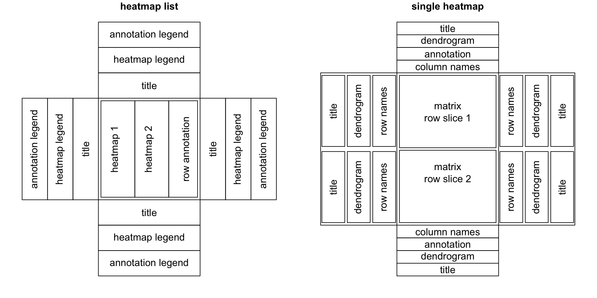

ComplexHeatmap Complete Reference
Zuguang Gu
last revised on 2018-10-13
About
This is the documentation of the ComplexHeatmap package. Examples in the book are generated under version 1.99.0.
Please note, this documentation is not completely compatible with lower versions (< 2.0.0, before Oct, 2018).
If you use ComplexHeatmap in your publications, I would be appreciated if you can cite:
Gu, Z. (2016) Complex heatmaps reveal patterns and correlations in multidimensional genomic data. DOI: 10.1093/bioinformatics/btw313

Complex heatmaps are efficient to visualize associations between different sources of data sets and reveal potential structures. Here the ComplexHeatmap package provides a highly flexible way to arrange multiple heatmaps and supports self-defined annotation graphics.
0.1 General design
Generally, a heatmap list contains several heatmaps and row annotations.

Surrounding the heatmap list, there are legends for heatmaps and annotations, also there are titles which are placed on the four sides of the heatmap list. And for each heatmap, there are also different components surrounding the heatmap body.
The ComplexHeatmap package is implemented in an object-oriented way. To describe a heatmap list, there are following classes:
Heatmapclass: a single heatmap containing heatmap body, row/column names, titles, dendrograms and column annotations.HeatmapListclass: a list of heatmaps and row annotations.HeatmapAnnotationclass: defines a list of row annotations and column annotations.
There are also several internal classes:
SingleAnnotationclass: defines a single row annotation or column annotation.ColorMappingclass: mapping from values to colors.
ComplexHeatmap is implemented under grid system, so users should know basic grid functionality to get full use of the package.
0.2 Vignettes
There are several vignettes in the package. Each vignette focuses on one specific topic. Following lists the general topics discussed in these vignettes:
-
This vignette introduces the basic configuration for making a single heatmap. Similar as other R functions/packages, the basic usage is quite similar, but there are several unique features for ComplexHeamtap package.
- Works both for numeric matrix and character matrix.
- For numeric matrix which contains continuous values, the package allows a color mapping function which can give more accurate colors and be robust to outliers.
- Highly flexible for clustering. You can define the distance method for clustering by:
- a pre-defined distance such as “euclidean” or “pearson”,
- a self-defined function which calculates distance from a matrix,
- a self-defined function which calculates distance from two vectors.
- a clustering function such as
diana()from cluster package - a
hclustordendrogramobject.
NAis allowed for clustering and heatmap visualization.- Dendrogram and dimension names can be put on any side of the heatmap.
- Rows on the heatmap can be split by
cutree, bykmeansor by a data frame which contains different levels that split the heatmap. - The heatmap body itself can be completely self-defined.
-
This vignette introduces how to concatenate a list of heatmaps and how adjustment is applied to keep the correspondence of the heatmaps.
-
This vignette introduces the concept of the heatmap annotation and demonstrates how to make simple annotations as well as complex annotations. Also, the vignette explains the difference between column annotations and row annotations.
Heatmap and Annotation Legends
This vignette introduces how to configurate the heatmap legend and annotation legend, also how to add self-defined legends.
-
This vignette introduces methods to add more self-defined graphics to the heatmaps after the heatmaps are generated.
-
How to select a region in the heatmap to retrieve the sub-matrix.
-
How to make an oncoPrint.
-
More simulated and real-world examples are shown in this vignette.
In the supplementaries of the ComplexHeatmap paper, there are four comprehensive examples which are applied on real-world high-throughput datasets. The examples can be found here.
Also my blog has some examples and tips for making better complex heatmaps.